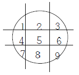
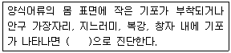

수산양식기사 (2011-03-20 기출문제)
1과목: 어류양식학
1. 무지개송어의 최적부화수온은?
- 5℃
- 10℃
- 15℃
- 20℃
(정답률: 47%)

2. 생식세포인 정자와 난자는 일반적으로 몇 배체인가?
- 반수체
- 2배체
- 3배체
- 4배체
(정답률: 83%)
3. 하루 중 잉어의 산란이 주로 이루어지는 때는?
- 자정을 전후해서
- 새벽부터 오전 중에
- 오후부터 일몰 전에
- 일몰 후 초저녁에
(정답률: 76%)
4. 실뱀장어의 소상에 대한 설명이 틀린 것은?
- 일몰 때부터 2~3시간이내에 만조가 되면 활발하게 올라온다.
- 비가 오거나 흐릴 때에는 하루의 시간에 관계없이 간조 시에 많이 올라온다.
- 8~10℃ 이하의 수온에서는 소상 활동이 크게 제한되고, 하천과 해수의 수온차가 없어져야만 활발하게 올라온다.
- 3~4월 수온이 8~10℃ 이상으로 올라가서 하천과 해수의 수온차가 없어지거나 하천수의 수온이 더 높아지면 수온의 영향은 없어지고 그 대신 조석의 영향이 커진다.
(정답률: 85%)
5. 유수식으로 넙치 난을 부화시킬때 난의 적정 밀도는?(단, 수조는 깊이 40cm 이상이며 에어레이션을 함)
- 1~2개/㎖
- 5~10개/㎖
- 20~50개/㎖
- 50~100개/㎖
(정답률: 65%)
6. 조피볼락 종묘생산시 먹이생물인 알테미아는 부화 후 그대로 공급하지 않고 영양강화를 한 후에 공급하는 경우가 많다. 이것은 알테미아에 어떤 영양소를 보충하기 위해서인가?
- 비타민 A 공급
- 포화지방산 공급
- 필수아미노산 공급
- DHA공급
(정답률: 84%)
7. 해산어 축양에 있어서 환수율(煥水率)을 기준으로 가두리 내의 수용밀도를 정할 때 기준으로 삼는 시기는?
- 3월의 대조시
- 3월의 소조시
- 8월의 소조시
- 8월의 대조시
(정답률: 65%)
8. 방어 양식에서 생사료 공급시 주의해야 할 사항이 아닌 것은?
- 멸치는 단독사료로 장기간 공급하지 않는다.
- 냉동시킨 생선은 해동시키지 않고 바로 쵸퍼에 갈아서 공급한다.
- 하루에 2~3회 먹이를 공급하는 것이 성장에 좋다
- 방어는 탐식성이어서 표층과 바닥에서 모두 먹이를 잘 먹으므로 여유 있게 공급한다.
(정답률: 91%)
9. 수온 15~17℃일때 복어알의 부화일수는?
- 약 3일
- 약 5일
- 약 10일
- 약 15일
(정답률: 64%)
10. 역사상 가장 먼저 양어를 시작한 나라는?
- 이집트
- 인도
- 중국
- 로마
(정답률: 78%)
11. 채널메기의 사육시 사료공급에 대한 설명 중 틀린 것은?
- 치어는 방양직후부터 먹이를 주어야 한다.
- 성어의 공급량은 1일에 몸무게의 약 10% 정도로 한다.
- 여름철 너무 더운 때에는 몸무게의 1.5~2% 정도의 사료량이 적합하다.
- 먹이는 아침 저녁으로 시원할 때에 주지만 봄과 가을의 서늘할 때는 저녁에만 준다.
(정답률: 43%)
12. 다음 중 몸무게 30~50g의 은어를 양성할 때 1일 먹이 공급률이 가장 적정한 것은?(단, %는 어체중 기준)
- 수온 10℃일 때 4~5%
- 수온 15℃일 때 1~2%
- 수온 20℃일 때 1~2%
- 수온 27℃일 때 4~5%
(정답률: 53%)
13. 식물성 먹이 생물을 소규모로 순수배양할 경우 배양액의 부피는 용기 전체 부피의 약 얼마정도 되어야 사용하기 편리한가?
- 1/2
- 1/3
- 1/4
- 1/10
(정답률: 65%)
14. 넙치자어 사육 시 일반적으로 최초의 먹이생물로 주로 이용되는 것은?
- 코페포다
- 로티퍼
- 알테미아
- 섬모충
(정답률: 92%)
15. 어류의 사료성분 중 1차적 에너지 대사의 원료로 쓰이는 성분은?
- 단백질
- 탄수화물
- 지질
- 무기염류
(정답률: 60%)
16. 금붕어 종류 중 부화자어 때부터 품종 색깔을 가지고 있는 것은?
- 유금
- 출목
- 캘리코
- 오란다
(정답률: 75%)
17. 잉어의 최적부화수온 범위는?
- 14~16℃
- 20~22℃
- 24~26℃
- 28~30℃
(정답률: 54%)
18. 양식종을 선택하는데 있어서 고려하여야 할 선택 조건 중 그 성격이 다른 것은?
- 몸이 건강하여 병에 잘 견딜 것
- 성장이 빠를 것
- 상품으로서 맛, 빛깔 등의 품질이 좋을 것
- 사육기술이 확립되어 있을 것
(정답률: 83%)
19. 100kg의 잉어에게 900kg의 사료를 먹여 600kg으로 성장시켰을 경우 사료계수는?
- 1.5
- 6.0
- 1.3
- 1.8
(정답률: 94%)
20. 넙치 치어의 공식현상이 가장 심해지는 크기는?
- 전장 5~10mm 전후
- 전장 22~50mm 전후
- 전장 55~80mm 전후
- 전장 100mm 전후
(정답률: 74%)
2과목: 무척추동물양식학
21. 다음 중 피조개의 산란임계온도로 가장 적합한 것은?
- 16℃
- 20℃
- 23℃
- 26℃
(정답률: 58%)
22. 다음 중 일반적인 천해서식장에서 전복류에 적합한 환경조건으로 요구되는 사항과 가장 관계가 먼 것은?
- 갈조류가 풍부한 곳
- 용존산소량이 3㎎/ℓ 이상인 곳
- 외양에 면한 암초지대
- 연중 수온이 5~15℃로 지속되는 곳
(정답률: 52%)
23. 우렁쉥이와 관련된 내용이 아닌 것은?
- 물렁증
- 자웅이체
- 척색
- 신티올
(정답률: 84%)
24. 해삼의 하면수온은?
- 15℃ 이상
- 20℃ 이상
- 22℃ 이상
- 25℃ 이상
(정답률: 62%)
25. 종묘를 생산할 때 부유 유생기에는 먹이를 주지 않아도 되는 종류는?
- 우렁쉥이
- 보리새우
- 대하
- 문어
(정답률: 88%)
26. 대합의 치패가 가장 많이 침하하는 대조시의 노출선은?
- 1~2시간선
- 2~3시간선
- 5~6시간선
- 7~8시간선
(정답률: 66%)
27. 대하의 유생발달 과정 중 조에아(zoea)기의 탈피횟수는?
- 1회
- 3회
- 5회
- 6회
(정답률: 73%)
28. 다음 중 조용한 내만에서 수하식으로 가리비 양식을 할경우 일반적으로 성장이 가장 빠른 방식은?
- 채롱식
- 귀매달기식
- 편평칸막이식
- 원통칸막이식
(정답률: 88%)
29. 우럭의 생태에 대한 내용이 옳은 것은?
- 장란형으로 껍데기는 흑자색이고 그 가장자리는 갈색인 경우가 많다
- 부유유생은 저서생활로 들어가면 족사로서 해초나 모래 같은데 부착한다.
- 표층 저질은 바지락이나 대합의 발생지보다 개흙질이 많은 곳이다.
- 육수가 유입하는 하구 부근으로서 간출이 없는 간석지에 많이 산다.
(정답률: 60%)
30. 전복의 상처 위치를 표시한 아래 그림에서 가장 폐사율이 큰 부위로 묶어진 것은?

- 1, 2, 6, 9
- 2, 3, 4, 6
- 2, 6, 7, 9
- 2, 5, 7, 8
(정답률: 92%)
31. 우렁쉥이의 서식장으로 적당하지 않은 곳은?
- 수온 범위가 5~24℃인 곳
- 외해의 영향을 많이 받는 곳
- 20m 내외의 수심이 암초나 자갈로 되어 있는 곳
- 여름철에 저비중인 곳
(정답률: 73%)
32. 보리새우 조에아기의 표준 먹이는?
- Skeletonema costatum
- Branchionus plicatilis
- Copepoda sp.
- Artemia nauplii
(정답률: 69%)
33. 바지락의 양성에 관한 설명 중 틀린 것은?
- 종묘는 장형으로 각장이 15~22mm의 것이 알맞다.
- 종묘 방양시기는 성장이 시작되는 봄이 가장 좋다.
- 성장을 빠르게 하기 위해 양성장에 수로를 만들어 해수유통을 좋게 한다.
- 방양장은 조석 범위 내에서 간출시간이 되도록 긴쪽이 좋다.
(정답률: 72%)
34. 양성장에 종묘를 방양할 때 고려되어야 할 내용중 틀린 것은?
- 양성장에 부착성 해적생물이 많이 부착하는 곳에는 그 시기를 피하는 것이 좋다.
- 일반적으로 종묘의 방양은 수온이 내려갈 때를 택 하는 것이 좋다.
- 방양량은 양성장의 환경조건이 가장 나쁜 시기의 안전한 현존량을 기준으로 한다.
- 부착성 동물이나 비부착성 잠입동물은 유영동물에 비해 방양밀도가 높다.
(정답률: 64%)
35. 우리나라 거제도 연안에 서식하는 참담치의 주 산란기는?
- 11월경
- 1월경
- 3월경
- 5월경
(정답률: 60%)
36. 다음 중 참전복을 채란할 때 산란반응률이 가장 높은 방법은?
- 수온자극
- 간출자극
- 자외선 조사
- 정수 및 유수의 반복
(정답률: 81%)
37. 진주모패에 핵을 넣기 전에 생식세포 발달을 억제시키는 경우가 있다. 그 시기는 언제인가?
- 6월 초순경까지
- 7월 초순경까지
- 9월 초순경까지
- 10월 하순경까지
(정답률: 44%)
38. 생식소가 성숙해서 모든 개체가 방란할 수 있는 완숙기로 되는 참전복의 적산수온은?
- 500℃
- 1,000℃
- 1,500℃
- 2,000℃
(정답률: 90%)
39. 우리나라 서해안 바지락의 산란성기에 해당되는 시기는?
- 3~4월
- 5~6월
- 7~8월
- 9~10월
(정답률: 55%)
40. 가리비 채묘치패의 관리방법으로 틀린 것은?
- 치패는 각장이 7~8mm로 되면 부착기에서 떼어 채롱에 옮겨 관리한다.
- 수하 양성용 종묘는 크기가 클수록 좋다
- 치패관리 시설은 파도의 영향을 적게 받아야 한다.
- 부착기에서 떨어지는 치패를 수용 관리하는 중간양성 과정은 필요 없다.
(정답률: 87%)
3과목: 해조류양식학
41. 톳의 양식방법과 관계가 없는 것은?
- 조간대 지역의 갯닦기
- 모조의 이식관리
- 뜬흘림발에 의한 양식
- 씨뿌림법
(정답률: 80%)
42. 미역 종묘배양에 관한 내용 중 틀린 것은?
- 배우초기에는 밝게(5000~6000lux) 유지한다.
- 배우체의 상태가 좋지 않는 경우 DDVP 유제를 첨가한다.
- 포자엽은 씨줄 1만 m 당 30~50kg 정도 사용한다.
- 수온과 조도와는 서로 보상관계가 있다.
(정답률: 51%)
43. 다음 중 김의 생장에 가장 좋은 질소와 그 농도는?
- 암모니아태질소 : 1ppm
- 암모니아태질소 : 100ppm
- 질산태 질소 : 4ppm
- 질산태 질소 : 30ppm
(정답률: 52%)
44. 뜬흘림발의 단점과 관계가 깊은 것은?
- 2차아에 의한 번식
- 싹이 밀생한 발
- 수광시간
- 어장의 부영양화
(정답률: 82%)
45. 미역에 대한 설명으로 틀린 것은?
- 우리나라의 전연안에 분포한다.
- 이형세대교번을 한다.
- 생장점이 몸 끝부분에 있다.
- 저수온기에 잘 자란다.
(정답률: 82%)
46. 홑파래의 인공채묘 과정 중 접합자를 받을 때 수조를 검은 비닐막으로 덮어씌우는 주 이유는?
- 강한 광선의 자극을 막기 위해서
- 접합자의 저항력을 길러주기 위하여
- 접합자가 고르게 고착하게 하기 위해서
- 접합자가 빨리 발아되게 하기 위하여
(정답률: 57%)
47. 다음 중 재생력을 이용하여 양식할 수 있는 해조류는?
- 김
- 다시마
- 우뭇가사리
- 홑파래
(정답률: 77%)
48. 김의 퇴색현상을 가장 크게 지배하는 색소는?
- 클로로필 a, b
- 카로티노이드 와 클로로필 a
- 클로로필 a와 피코에리드린
- 피코에리드린과 피코시아닌
(정답률: 69%)
49. 미역종묘 배양과정에서 수온상승에 따라 가장 우선적으로 대처해야 하는 것은?
- 틀을 자주 뒤바꾸어준다.
- 물갈이를 1주일에 2회 이상 한다.
- 시비를 자주하여 종묘를 튼튼하게 한다.
- 광선을 어둡게 관리한다.
(정답률: 80%)
50. 미역의 수배우체에서 정자가 만들어지는 상태는?
- 하나의 조정기에서 1~수 개의 정자가 형성된다.
- 수배우체 1개에서 1개의 조정기와 1개의 정자가 만들어진다.
- 하나의 조정기에서는 하나의 정자가 만들어진다.
- 하나의 조정기에서는 수백 개의 정자가 동시에 형성된다.
(정답률: 55%)
51. 다시마 자낭반의 주된 형성기는?
- 5~7월
- 7~9월
- 9~10월
- 10~11월
(정답률: 48%)
52. 다시마 양식 시설 장소로 적합하지 않는 것은?
- 조류가 다소 빠른 곳
- 저질은 자갈, 모래, 사니질 지역
- 수심 6~10m 정도인 곳
- 담수 유입이 잘되는 지역
(정답률: 72%)
53. 해수의 유동이 김에 주는 영향과 가장 거리가 먼 것은?
- 적정온도의 유지
- 영양염의 공급
- 노폐물의 운반
- 부니의 부착방지
(정답률: 63%)
54. 조도 및 수온과 미역의 생장과의 관계를 잘못 설명한 것은?
- 생장 성기에 맑은 날씨가 많은 해에 풍작이 많다.
- 생장이 좋은 양식장으로는 15℃이하의 기간이 긴 외양 쪽이 유리하다.
- 수온이 빨리 내려가는 곳은 조기생산을 하기 어렵다.
- 내만에서는 조기생산을 하기가 쉽다.
(정답률: 45%)
55. 조가비 사상체의 평면식 배양의 장점은?
- 대량배양이 가능하다.
- 과포자의 잠입이 균일하다.
- 병해관리가 쉽다.
- 수온변화가 적다.
(정답률: 58%)
56. 다시마 양성시 생장, 성숙촉진 및 끝녹음의 방지를 위한 수위조절로 틀린 것은?
- 가을에서 3월까지는 수면 하 1m
- 봄이 4~5월에는 수면 하 1.5m
- 초여름의 6~7월에는 수면 하 2~2.5m
- 한여름의 8월에는 수면 하 7~10m
(정답률: 88%)
57. 다시마 양식관리에 있어 솎음은 4~5월경에 친승 1m 당 몇 개체가 남도록 해야 가장 좋은가?
- 70~100개체
- 50~70개체
- 25~50개체
- 100개체 이상
(정답률: 84%)
58. 우뭇가사리가 주로 분포하는 지역과 거리가 먼 것은?
- 암초지대가 발달한 곳
- 반도의 동쪽연안
- 물의 왕복운동이 없는 조용한 곳
- 조가비가 섞인 억센 모래가 많은 곳
(정답률: 62%)
59. 김의 조가비 사상체 배양에서 물갈이를 할 때 가장 주의해야 할 일은?
- 비중과 조도의 급변방지
- 수온과 조도의 급변방지
- 비중의 급변과 건조방지
- 영양염의 급변과 건조방지
(정답률: 55%)
60. 풀가사리의 반상체에서 새싹이 돋아나는 시기는?
- 12~2월
- 3~5월
- 6~8월
- 9~11월
(정답률: 51%)
4과목: 양식장환경
61. 다음중 독소를 가지고 어패류에 해를 주는 적조생물은?
- Chattonerla
- Skeletonema
- Navicula
- Cheatoceros
(정답률: 45%)
62. 아지드화나트륨변법으로 산소분석시 지시약의 주 성분은?
- 티오황산나트륨
- 전분
- 탄산마그네슘
- 염화망간
(정답률: 52%)
63. 가두리 양식장의 노화방지책으로 가장 우선적인 것은?
- 먹이과잉공급방지
- 양식생물수용량 조절
- 저질경운
- 휴식연제 도입
(정답률: 82%)
64. 양수고가 3.5m이하에서 동력소비량 대비 양수량이 가장 많은 펌프형식은?
- 원심력펌프
- 축류펌프
- 샤류펌프
- 왕복펌프
(정답률: 55%)
65. 물속에 용존되어 있는 이온화되지 않은 암모니아(NH3)의 양은 pH가 1단위 증가할 때(예 : pH 7→8) 어떻게 변하는가?
- 2배 정도 증가한다.
- 10배정도 증가한다.
- 1/10정도 감소한다.
- 1/2정도 감소한다.
(정답률: 89%)
66. 무지개송어 양식에서 원형 사육지의 구조설명이 틀린 것은?
- 원형지의 깊이는 치어용인 경우에 수심을 30~40cm 로 하고, 식용어 육성용은 60cm 또는 그 이상으로 하는 것이 관리에 편리하다
- 원형지의 경사율은 5~10%로 하는 것이 찌꺼기 제거 효율이 높아진다.
- 원형지의 주수구는 높은 곳의 물을 파이프를 통해서 원형지의 벽과 평행하게 주입시킨다.
- 배수구를 못 중앙에 설치하여 물의 회전작용으로 바닥의 고형오물이 중앙 배수구쪽으로 몰리게 하여 배수되는 물과 함께 밖으로 나가게 하는 것이 수질관리에 좋다.
(정답률: 73%)
67. 틸라피아 양식에서 수심이 70~100cm 또는 그 이상일때의 바닥 경사율은?
- 0.5~1%
- 5~10%
- 15~20%
- 25~30%
(정답률: 53%)
68. 다음 중 자외선 살균소독을 가장 많이 이용하는 것은?
- 종묘생산시설의 용수
- 잉어류 양식장
- 폐수처리를 위한 전처리
- 대규모 사육시설
(정답률: 64%)
69. 비중 측정에 관한 설명으로 틀린 것은?(단, 디지털 기기를 이용한 측정은 제외)
- 일반 해수비중 측정용으로 보통 아카누마식 비중계 B호를 많이 사용한다.
- 비중계는 표면에 기름기가 없어야 정확히 측정된다.
- 비중을 측정할 때에는 온도계를 사용하여 수온을 측정한다.
- 해수 중에 비중계를 넣을 때 해수의 비중이 적으면 많이 뜬다.
(정답률: 81%)
70. 1기압 하에서 용존산소의 포화도가 가장 큰 물은?
- 0℃ 해수
- 4℃ 해수
- 0℃ 담수
- 4℃ 담수
(정답률: 79%)
71. 하천에서 오염물이 유입되는 유입점인 하류지역의 특징은?
- 용존산소 농도가 높아지고 탁도가 낮다.
- 용존산소 농도가 높아지고 탁도가 높다.
- 용존산소 농도가 낮아지고 탁도가 높다.
- 용존산소 농도가 낮아지고 탁도가 낮다.
(정답률: 87%)
72. 순환여과식 양어장에서 활성오니법으로 수질을 관리하고자 할 때 효율적인 활성오니법에 대한 내용으로 옳은 것은?
- 질산화세균은 절반정도가 항상 공기 중에 노출 되도록한다.
- 수심을 얕게 하여 질산화 세균의 성장을 촉진한다.
- 활성오니가 잘 성장하기 위해서는 태양의 직사광선을 차단해야 한다.
- 활성오니생물은 그 특성상 에어레이션하지 않아도 사육수에 잘 현탁된다.
(정답률: 79%)
73. 양식장에서 발생하는 아질산성 질소의 성질에 대한 설명으로 옳은 것은?
- 아질산성질소는 암모니아가 산화되어 만들어진다.
- 어류 혈액중의 식세포와 결합하여 식균작용을 강화시킨다.
- 어류의 아가미 점액분비 기능을 억제시킨다.
- 아질산성 질소는 혈액 중의 헤모글로빈에 대한 친화력이 산소보다 약하다.
(정답률: 83%)
74. 생물학적 여과과정에서 Nitrite를 Nitrate로 분해하는데 관여하는 세균은?
- Nitrosomonas
- Nitrobacter
- Pseudomonas
- Corynebacterium
(정답률: 66%)
75. 다음중 기본형 에어레이션 장치가 아닌 것은?
- 낙차에어레이션 장치
- 표면 에어레이션 장치
- 벤튜리관 에어레이션 장치
- 확산에어레이션 장치
(정답률: 88%)
76. 다음 중 환경여건으로 보아 황화수소가 발생할 염려가 가장 적은곳은?
- 저수지
- 정수식양어지
- 해안의 기수호
- 해조류 양식장
(정답률: 67%)
77. 순환여과식 양식장의 고형 오물제거 시설로 침전조를 이용한 방법을 택했을때 다음 설명 중 틀린 것은?
- 사육조에서 나오는 배출수에 섞여있는 고형물 중 작은 입자는 물이 빠르게 흐르게 되는 곳에서는 침전하지 않는다.
- 침전조는 클수록, 또 침전조에서 물이 통과하는 시간이 짧을수록 침전이 잘 된다.
- 사육조에서 나오는 물을 침전시키는 제 1차 침전조는 사육조와 생물여과조 사이에 설치해야한다.
- 침전조로 들어가는 물은 표면 가까이에서 들어가게 하고 나가는 물도 표면 가까이에서 빠져 나가게 하면 바닥에 일단 침전된 찌꺼기가 다시 떠오르는 것을 방지 할 수 있다.
(정답률: 71%)
78. 은어양식에서 면적이 100m2 이고, 수심이 1m이면 1분간 어느정도 이상의 용수가 확보되어야 하는가?
- 0.⑤m2
- 0.10m2
- 0.25m2
- 0.5m2
(정답률: 54%)
79. 다음 사육장치의 이름은?
- 물넘기 장치
- 순환수류장치
- 공기양수 장치
- 벤튜리 배수 장치
(정답률: 86%)
80. 여름철 바람이 없는 고요한 날 양어지의 어류가 호흡곤란을 일으키는 주된 요인은?
- 공기중의 산소가 녹아들기 어렵기 때문
- 어류가 더 많은 산소를 소비하기 때문
- 물 전체에 걸쳐 질소가스가 많아지기 때문
- 수온이 갑자기 높아지기 때문
(정답률: 82%)
5과목: 수산질병학
81. 뱀장어에 기적병(붉은 지느러미병)을 일으키는 세균은?
- Aeromonas salmonicida
- Aeromonas hydrophila
- Pseudomonas fluorenscens
- Pseudomonas anguilliseptica
(정답률: 72%)
82. 양식 넙치에 여름철 고수온기에 발생하는 질병으로서 탈장, 복부팽만, 간 출혈을 나타내며 병원균은 TCBS 배지상에서 황색 또는 녹색의 집락을 보이는 병은?
- 적점병
- 에드워드병
- 하베이병
- 연쇄구균병
(정답률: 76%)
83. 넙치의 체색이 장기간 검어졌다면 다음중 어떠할 경우 주로 일어날 수 있는 병인가?
- 변질된 사료를 장기가 투여하였을 때
- 배합사료와 생사료를 혼합하여 투여하였을 때
- 생사료만 투여하였을때
- 배합사료만 투여하였을때
(정답률: 85%)
84. Aeromonas salmonicida 균에 의한 부스럼병의 증상에 관해서 설명한 것 중 틀린 것은?
- 팽윤환부를 형성하고, 근육이 융해되고 출현이나 장액이 심출된다.
- 피부창상이 주요 감염문호가 되어 팽윤환부가 붕괴, 궤양화된다.
- 아가미를 통해서 감염되는 경우는 새박판 상피나 모세혈관까지 세균집락이 형성되고 혈액장해나 조직의 붕괴를 일으킨다.
- 체표에 v자 모양, 혹은 무늬상의 출혈을 띠고 사망한다.
(정답률: 71%)
85. 연어과 어류의 세균성 신장병(BKD)의 주요 증상은?
- 신장과 그 외 장기에 백점 및 백반상의 병소 형성
- 두부, 등, 꼬리지느러미에 두터운 점액막 형성
- 체표 전면에 점상출혈과 모세혈과 확장
- 아가미 표면에 팽윤된 환부 형성
(정답률: 84%)
86. 양식 해산어 피해가 큰 Nocardia seriolae 균의 발생역학에 대한 설명 중 틀린 것은?
- 유행시기는 7월부터 다음해 2월까지이며, 가장 심한 시기는 9~10월이다.
- 육상의 담수에서는 장시간 생존하지 못하고 염분이 높은 외해수에 장기간 생존한다.
- 양만장 부근이 해수에서는 1주일 이상 생존하고 어육추출물 100ppm 첨가 해수 중에서는 3개월이상 생존한다.
- 부영양화 또는 양식에 의한 자가 오염이 진행된 해역에 균이 정착할 가능성이 있다.
(정답률: 48%)
87. 효모가 포함된 사료를 숭어에 먹였더니 위에 가스가 발생하여 복부가 팽창되었다. 다음 무슨 균과 관련이 있는가?
- Ichthyophonus sp.
- Saprolegnia sp.
- Candida sp.
- Fusarium sp.
(정답률: 69%)
88. 잉어 봄 Virus 병(SVC)의 증상은?
- 근육에 점상출혈
- 발광, 선회
- 아가미 부식
- 카타르성 위장염
(정답률: 54%)
89. 김 사상체 병해인 녹반병과 황반병의 가장 큰 차이는?
- 전염성의 유무
- 광선의 불균형
- 온도의 불균형
- 조도 부족
(정답률: 84%)
90. 잉어의 Pseudomonas 균에 의한 세균 백운병을 예방하는 방법은?
- 선별을 자주하여 같은 크기의 잉어를 수용한다.
- 수질을 관리하고 수용밀도를 감소시켜 주어야 한다.
- 고수온기에 발병하는 경향이 높으므로, 발뱅시에는 수온은 10℃ 전후로 낮추어야 한다.
- 염분이 미치는 양식지에서 유행하므로 염분이 없는 물로 환수해야 한다.
(정답률: 67%)
91. 뱀장어의 부레병(부레 선충병)을 일으키는 기생충은?
- Anguillicola sp.
- Bothriocephalus sp.
- Philometroides sp.
- Proteocephalus sp.
(정답률: 80%)
92. 뱀장어 Heterosporis 증의 치료가 어려운 이유는?
- 근육에 cyst를 형성하고 있어서
- 창자에 cyst를 형성하고 있어서
- 골수에 cyst를 형성하고 있어서
- 진피층으로 충체가 잠입하여
(정답률: 71%)
93. 저염분의 영양하에서 기계적인 자극이 원인이 되어 발생하는 것으로 녹반병과 비교할 때 엽체의 구멍이 생기는 공통적인 점이 있어 혼동하기 쉬운 갯병은?
- 흰갯병
- 구멍갯병
- 의사흰갯병
- 호상균병
(정답률: 86%)
94. 무지개송어가 항문에 불투명한 점액변을 달고 다닐 때 그 원인 중 가장 가능성이 큰 것은?
- 비타민 E가 과량 함유된 사료의 투여
- IPN병에 감염
- 물곰팡이 병에 감염
- 백점충에 감염
(정답률: 75%)
95. 다음중 ( )안에 가장 적합한 것은?

- 암모니아 중독증
- 아질산 중독증
- 가스병
- 산소 결핍증
(정답률: 88%)
96. 무지개송어나 은연어 치어의 꼬리부 피부에 세균의 증식으로 궤양이 생기므로 미병병(Peduncle disease)으로 불리는 병의 원인은?
- Flavobacterium psychrophilum
- Flavobacterium branchiophlia
- Pseudomonas fluorescens
- Streptococcus faecalis
(정답률: 66%)
97. 양식어류의 신장에 감염되어 병어를 폐사시키는 병원균은?
- Renibacterium salmoninarum
- Pseudomonas anguilliseptica
- Edwardsiella ictaluri
- Aeromonas hydrophila
(정답률: 58%)
98. 다음 중 감염 대상 어종의 범위가 가장 넓은 것은?
- Iridovirus
- Herpesvirus
- Rhabdovirus
- Birnavirus
(정답률: 74%)
99. 아가미 흡충의 특징에 대한 설명이 틀린 것은?
- 종에 따라 담수어 또는 해수어에 감염된다.
- 숙주조직 또는 숙주의 혈액을 섭취한다.
- 충체가 기생된 아가미는 곤봉화된다.
- 아가미 조직에서 기생된 충체가 탈락하면 숙주는 자연치유된다.
(정답률: 87%)
100. 뱀장어에 Columnaris 병이 유행하는 시기는?
- 이른 봄
- 초여름 ~ 초가을
- 가을 ~ 겨울
- 겨울 ~ 봄
(정답률: 80%)